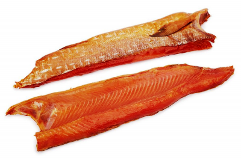

Продукция РК им.Котовского
(Цены на продукцию действуют с 01 января 2018 года)
Кета

Кета (боковник) холодного копчения
Цена: 550 руб./кг.
Кета (боковник) сушёно-вяленая
Цена: 610 руб./кг.
Кета (кусочки) холодного копчения
Цена: 570 руб./кг.
Кета (филе ломтики) в масле
Цена: 750 руб./кг.
Кета (соломка) сушёно-вяленая
Цена: 900 руб./кг.
Кета (ломтики) холодного копчения
Цена: 710 руб./кг.
Кета (нарезка с кожей) холодного копчения
Цена: 590 руб./кг.
Кета (балык) холодного копчения
Цена: 550 руб./кг.
Кета (стейк) мороженый
Цена: 290 руб./кг.
Головы лососёвые холодного копчения
Цена: 100 руб./кг.
Кета: описание, свойства
Кета - это довольно распространённый вид рыб семейства лососёвых.
Мясо кеты давно признано деликатесным продуктом, а её икра пользуется еще большей популярностью у покупателя, который не смотрит на высокую стоимость этих продуктов, зная их качество и какими полезными свойствами они обладают. Наибольшее количество кеты сосредоточено в регионах Дальнего Востока.
Виды кеты
Кета бывает двух видов: летней и зимней. Потомство, оставленное летней рыбой зимой редко выживает. Потомство же зимней рыбы гораздо живучей и намного лучше переносит холод. Это происходит из-за того, что откладывает икру зимой, где есть грунтовые воды. Рыба вырывает яму, затем накрывает икру бугром. Весной же мальки поднимаются на поверхность.
Питание кеты
Кета является хищной рыбой, употребляющей в пищу себе подобных представителей водного мира. Пищевой рацион кеты состоит из более мелких особей этого же семейства, а также других морских и речных обитателей: песчанка, корюшка, сельдь, ракообразные и т.д. Находясь в реке, кета ничем не питается. Молодь кеты предпочитает питаться насекомыми, их личинками, червями и мелкими ракообразными. Питание для себя кета способна найти в любых условиях.
Пищевая ценность и состав мяса кеты
Мясо кеты обладает массой полезных свойств и содержащихся в мясе полезных микроэлементов (железо, фтор, цинк, никель, хром, молибден, калий, фосфор, хлор, кальций, магний, натрий) и витаминов (E,C,B1,B2,A).
Множество людей сомневается в целесообразности употребления кеты в пищу. По их мнению мясо кеты содержит большое количества холестерина. Но это мнение ошибочно, поскольку в 100 граммах продукта содержится всего лишь 80 миллиграмм холестерина. Этот показатель совсем незначительный и практически никак не влияет на человеческий организм.
Калорийность
Калорийность кеты незначительна. В 100 граммах кеты содержится 138 килокалорий. В процессе приготовления рыбы, калорийность продукта будет несколько увеличена. В копченном продукте находится 180 килокалорий, в соленом - 184, в жареном - 224.
Многие диетологи, предлагают своим пациентам в качестве здоровой и низкокалорийной пищи, мясо именно этой рыбы. Оно не только содержит в себе минимальное число калорий, но и является очень полезной пищей.
Полезные свойства кеты
Основные полезные свойства кеты - это предотвращение развитие инфаркта и инсульта, нормализация работы сердца, улучшение памяти и работы головного мозга, омоложение тонуса кожного покрова и сохранение молодости, способствует нормализации работы печени, благоприятно влияет на человека при нервных расстройствах, оказывает положительное влияние на репродуктивную функцию человека, укрепляет иммунную систему.
Противопоказаний к применению рыбы практически не существует, единственным из них является личная непереносимость компонента. Также немаловажно качество обработки продукта. Перед приготовлением пищи рыбу необходимо обработать термическим способом: нагреть или заморозить. Вред кета при употреблении, может нанести только людям, имеющим аллергию на морепродукты. Им рекомендуется отказаться от подобной пищи.
Как правильно выбрать кету
Правильно выбрать морские продукты для приготовления определенного блюда – очень сложная, но выполнимая задача. Нередко за кету выдают горбушу. Последняя из них является более дешевым и менее полезным продуктом. Чтобы отличить кету от горбуши и других рыб необходимо, прежде всего, обратить внимание на её вес (кета не может быть менее 5 килограмм. У свежей рыбы мясо обладает розовым цветом. При надавливании на тушку, продукт должен быстро восстанавливать свои объемы. Чешуя рыбы должна обладать сероватым оттенком. Горбуша в отличие от кеты имеет небольшой горбик на спине.
Долго хранить продукт не рекомендуется. Однако, если возникла в этом необходимость, то следует ее помыть, почистить, просушить и засыпать солью. В таком состоянии она может храниться в холодном месте длительное время. Также можно заморозить рыбу в целом виде, но срок хранения в таком состоянии значительно сокращается.
Вернуться в каталог продукции